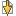

Options de différence suivante
Outils > Options > Différence suivante


|
Options de différence suivante Outils > Options > Différence suivante |
|
|
Définir ces options pour refléter vos préférences concernant comment dépouiller les différences. Lors du chargement de nouveaux fichiers, aller à la première différence Lorsque coché, se positionne sur la première différence lorsqu'une nouvelle comparaison de fichier démarre. Aller à la différence suivante dans les fichiers après avoir copié vers l'autre côté Lorsque coché, se positionne sur l'élément différent suivant après avoir copié l'élément actif vers l'autre côté. Limiter "Fichiers différents suivants" au dossier en cours Lorsque coché, la commande Fichiers différents suivants  ne trouvera que des fichiers qui ont le même dossier parent. Revenir à la première différence Lorsque coché, on revient sur la première différence de la comparaison après avoir atteint la fin. Afficher le panneau de message Lorsque décoché, supprime l'affichage de message (et le bip) lorsqu'une différence n'est pas trouvée. |